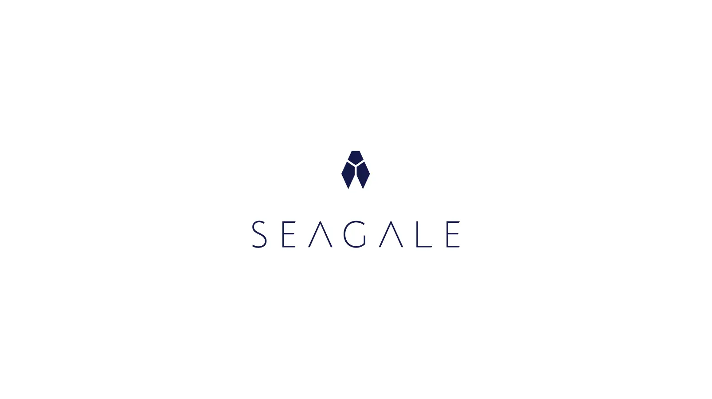
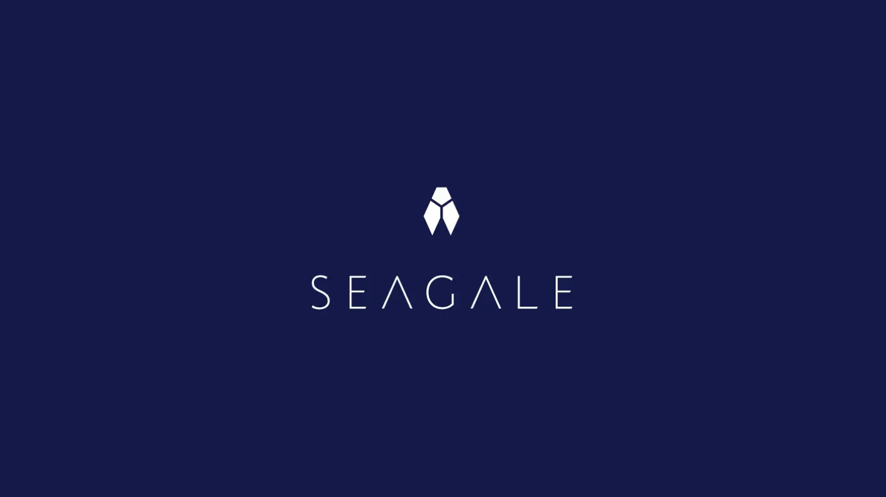
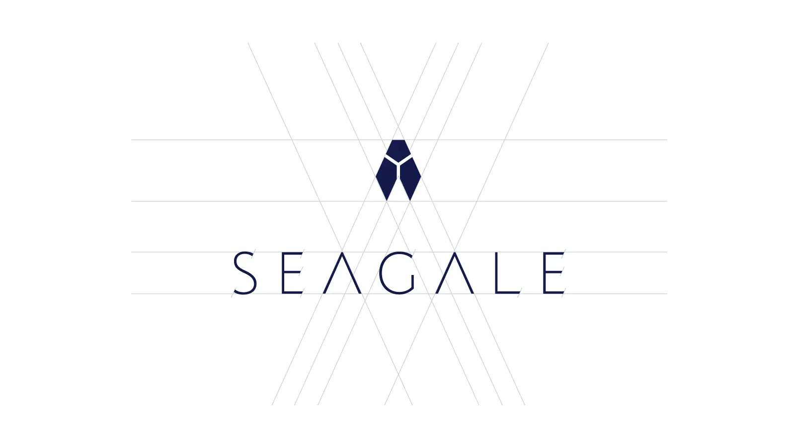
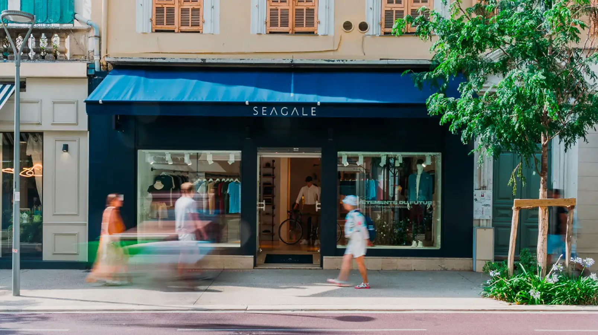
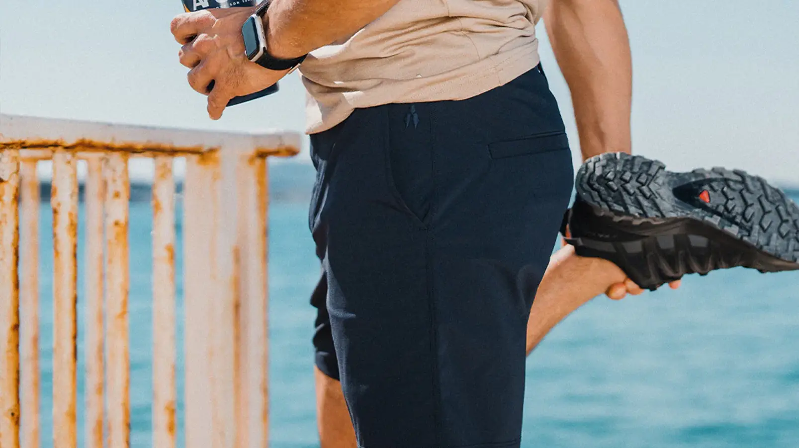
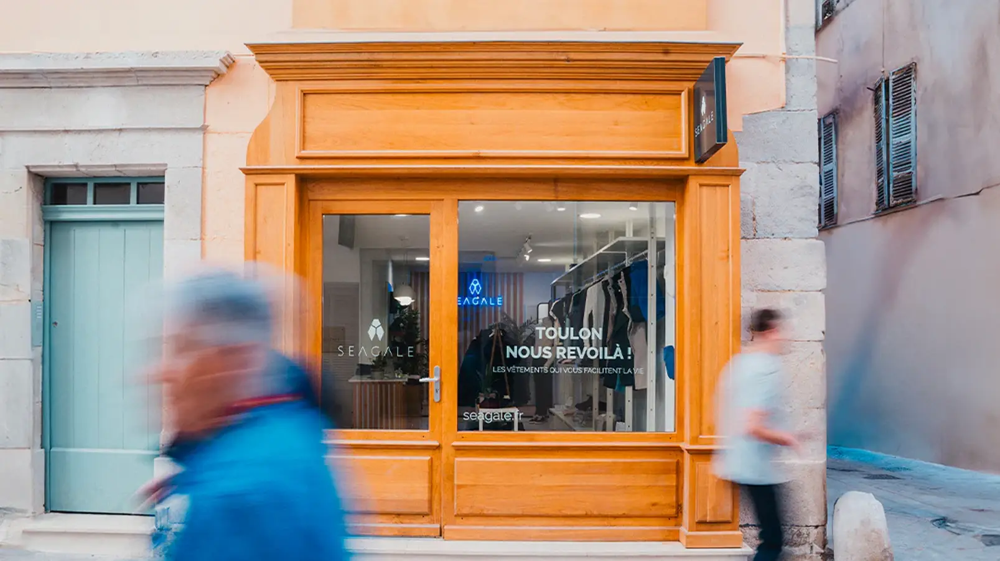

Seagale — Identité Visuelle & Logo Vêtements
Ce projet date de 2014, on voit combien il a bien vieilli, les clients en sont toujours aussi ravis et j'en entends souvent du bien. On se rend rapidement compte qu'un logo fait avec passion peut durer dans le temps.
Logotype & Design de Marque
Situé à Toulon dans le Var, le nom Seagale est évidemment un jeu de mots entre Sea (mer) et la cigale du Sud de la France. C'était donc une évidence que de créer un symbole alliant la technologie à cet insecte chanteur.
Pour en savoir plus : seagale.fr




Boutique Seagale à Nice (crédit photo seagale.fr)

Shooting photo avec symbole Seagale brodé (crédit photo seagale.fr)

Boutique Seagale à Toulon (crédit photo seagale.fr)
Parlons de votre projet